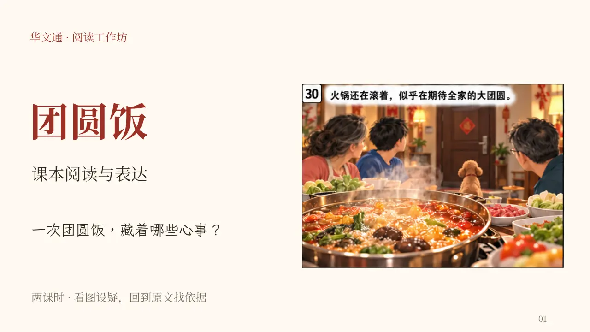

中一 · 单元二 · 核心课文
中一
›
课文学习
›
单元二
›
团圆饭
教师投影版
团圆饭 · 漫画阅读课
‹ 教师资料
下载可编辑PPT

上一页
下一页
1. 团圆饭
2. 过年前的妈妈
3. 初读 第1—3段
4. 初读 第4—5段
5. 初读 第6—8段
6. 初读 第9—11段
7. 初读 第12—14段
8. 初读 第15—16段
9. 任务1 时间与成长
10. 任务1 讲解与比较
11. 任务2 喜庆与愁容
12. 任务2 讲解与比较
13. 任务3 缺席原因与人物心理
14. 任务3 讲解与比较
15. 谁在判断妈妈的心事？
16. 任务4 往年与今年的气氛
17. 任务4 讲解与比较
18. 第二课 围炉与传统年菜
19. 任务5 行动、目的与特点
20. 任务5 讲解与比较
21. 任务6 门铃与开放结局
22. 任务6 讲解与比较
23. 任务7 团圆饭怎样串联全文
24. 任务7 讲解与比较
25. 岁月还“偷走”了什么？
26. 任务8 引号中的意思
27. 任务8 讲解与比较
28. 任务9 电子红包与关心
29. 任务9 讲解与比较
30. 任务10 无图新文迁移
31. 任务10 讲解与比较
32. 阅读后的自检
全屏投影
可用左右方向键翻页；按 Esc 退出全屏。第一课1—17页，第二课18—32页。
本页教学提示